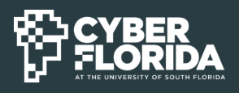
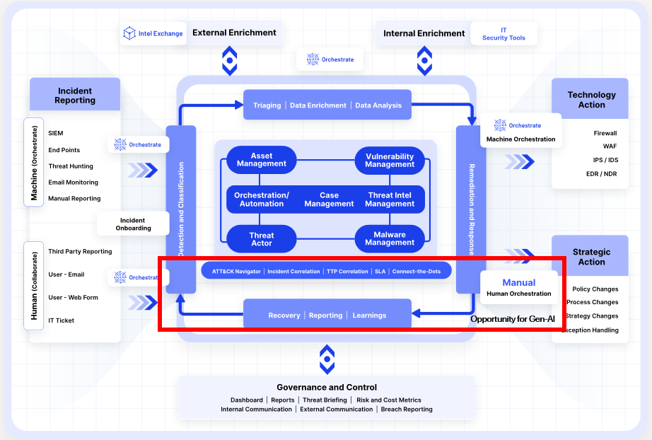
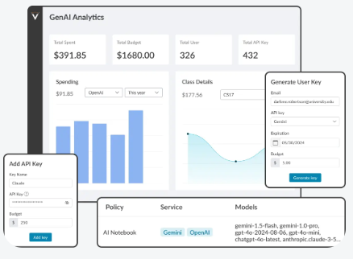
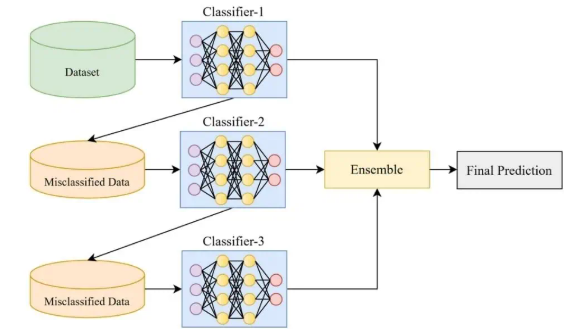
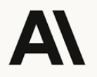
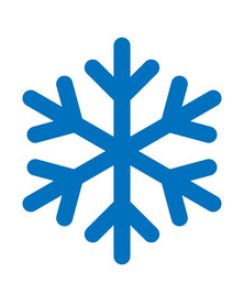
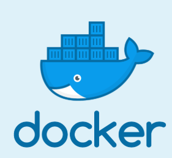
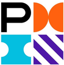

To succeed in life and achieve results, you must understand and master three mighty forces—desire, belief, and expectation.
I'm an AI Engineer turning enterprise operations into scalable, AI-native systems. I build multi-agent AI systems and RAG pipelines that automate high-stakes enterprise workflows — from hybrid-retrieval matching engines to LLM orchestration pipelines that cut hours of manual analysis down to seconds. My background spans data engineering, business analytics, and quality assurance, which shapes how I design AI systems: reliable, measurable, and built to earn stakeholder trust.
ResumeI currently work as an AI Engineer at Cambrian Lab in San Francisco, where I architect hybrid-retrieval matching systems, calibrate vector search pipelines, and build LLM orchestration workflows that automate enterprise supply-chain and data operations. Before that, I delivered a secure enterprise RAG platform at 22nd Century Technology, built spatial data pipelines and ML site-ranking engines at Surge Infotech, and led product and data analytics for UKG's enterprise SaaS platform. Across every role, the common thread is the same: turning messy, high-volume enterprise data into systems that make faster, more confident decisions possible.
That mix of analytics and engineering is what drives my focus today: designing agentic AI and retrieval systems that are not just powerful, but calibrated, auditable, and genuinely trusted by the people who rely on them.


RAG · LLM · Agentic Workflows · Cybersecurity
A Generative AI solution that helps SOC analysts detect, investigate, and respond to cyber threats faster. Combines LLMs with Retrieval-Augmented Generation over historical incident data, real-time threat intelligence feeds, and frameworks like MITRE ATT&CK to generate dynamic response playbooks for rare, unpredictable "black swan" incidents.
View Repository
Multi-Agent Systems · RAG · Evaluation · Orchestration
A reusable multi-agent workflow for technical project management that converts a raw product specification into structured user stories, features, and engineering tasks. Implements seven cooperating agent classes — direct prompting, knowledge augmentation, RAG-backed prompting, evaluation, routing, and action planning — orchestrated end-to-end and validated with pytest.
View RepositoryStatistical Modeling · Optimization · Financial Analytics
Applies advanced SAS statistical methods to build a credit scoring model and optimize an investment portfolio for a mid-sized financial institution, spanning 2.5M+ loan records. Covers ETL pipelines, PROC LOGISTIC classification and factor analysis, PROC OPTMODEL portfolio optimization, time-series forecasting, stress testing, and regulatory capital reporting.
View Repository
NLP · XLM-R · Multilingual Classification
A multilingual Natural Language Inference project built for a Kaggle competition, classifying sentence pairs across 15 languages as entailment, contradiction, or neutral. An ensemble of fine-tuned XLM-RoBERTa models reached 90.06% test accuracy, placing 6th out of 64 teams.
View RepositoryThe stack behind agentic AI systems, retrieval pipelines, and enterprise-scale data engineering.
OpenAI · Anthropic Claude · Gemini · LLM Orchestration · Agentic Workflows · Multi-Agent Systems · MCP
Hybrid Retrieval · Semantic Search · Vector Search · Embeddings · Reranking · Qdrant · HNSW/ANN
LLM Evaluation · Retrieval Evaluation · Confidence Scoring · Groundedness · Error Analysis · Human-in-the-Loop
Python · FastAPI · REST APIs · LangChain · LlamaIndex · Prompt Engineering
PySpark · SQL · Databricks · Delta Lake · ETL/ELT · Medallion Architecture · Data Quality
AWS · S3 · EC2 · Snowflake · Docker · Git/Bitbucket
MLflow · Databricks AutoML · Machine Learning · Tableau · Power BI
Solution Architecture · Technical Design · Project Management · Requirements Engineering · System Integration · AI Product Delivery
University of South Florida, Tampa, FL · May 2024
Gandhi Institute of Technology and Management, India · July 2020

Anthropic Academy
Issued Apr 2026
Anthropic Academy
Issued Apr 2026
Anthropic Academy
Issued May 2026
Anthropic Academy
Issued Apr 2026
Anthropic Academy
Issued May 2026
Anthropic Academy
Issued May 2026
LangChain Academy
Issued Sept 2026
Microsoft
Issued Apr 2026
Microsoft & LinkedIn
Issued 2026
Databricks
Issued Apr 2025

Snowflake Academy
Issued Dec 2024
Wolfram
Issued Oct 2024

Docker, Inc
Issued Oct 2024
Atlassian
Issued Sep 2024
McKinsey & Company
Issued Jun 2026
Udacity by Accenture
In-Progress

Akshit thrives when tackling complex, ambiguous technical challenges in the AI space. His expertise in metadata filtering, indexing, and pipeline orchestration, combined with his drive for end-to-end execution was key to delivering high-value enterprise AI solutions.
Directing Akshit on our Urban AI initiative showed me firsthand his depth as both a Data Engineer and AI Practitioner. He built robust Medallion architectures and high-throughput pipelines that transformed millions of complex spatial records into commercial-ready AI solutions.
Akshit ability to bridge the gap between complex data insights and engineering execution was essential for our team on UKG Talk. His analytical rigour and proactive approach in unblocking cross-functional dependencies kept our engineering workflows running seamlessly.
Email me to get in touch!